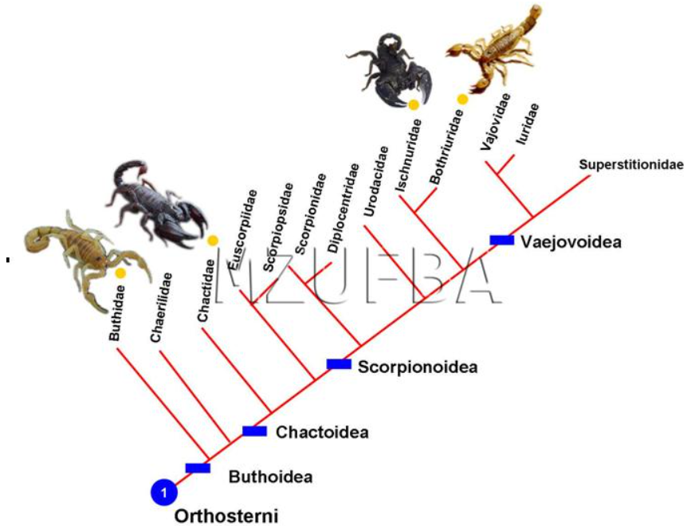

Filogenia adaptada de Stockwell, S.A. 1989. Os pontos em amarelo são as famílias que ocorrem no Brasil: Buthidae, Chactidae, Ischnuridae (= Liochelidae) e Bothriuridae, mostrando os representantes de espécies brasileiras (Rhopalurus rochai, Brotheas granulatus, Bothriurus rochai, Opistacanthus cayaporum). As dimensões dos espécimes foram alteradas e não são correspondentes.
Escorpião
Os artrópodes formam um filo (Arthropoda) de animais com as patas e todos os outros apêndices articulados (antenas, peças bucais etc) e com exoesqueleto, uma proteção externa contra perda de água e danos físicos, que limita o crescimento dos animais sendo necessário uma troca de exoesqueleto para que se desenvolvam.
Uma característica exclusiva dos escorpiões (nenhum outro aracnídeo tem) é a presença dos “pentes”, pequenas estruturas que parecem pentes e que servem para eles perceberem como é o substrato (chão) onde estão se deslocando, já que são animais terrestres. Isso é muito importante, porque os escorpiões não enxergam, seus pequenos olhos são primitivos e só funcionam para perceber a luminosidade. O que os permite viver tanto em lugares desertos quanto nas matas, neles, eles se escondem durante o dia, para caçar à noite, usando seu veneno para defesa e caça. Alimentando-se principalmente de insetos e outros invertebrados (predadores).
Sistema digestivo
O sistema digestivo dos escorpiões é completo e o alimento é levado até ele por apêndices bucais articulados. O sistema é dividido em três partes, o anterior serve para digestão mecânica, o mediano (ou ceco) para digestão enzimática e absorção de nutrientes e o posterior para absorção de água. A excreção é feita pelo nefrídeos que são associados a outras estruturas como túbulos de Malpighi ou glândulas coxais, as quais têm aberturas na base das antenas ou na base do primeiro par de patas para eliminação dos excretas.
Sistema circulatório
Pelo fato do sistema circulatório ser aberto, o sangue sai do coração, passa pelos vasos, sai para a hemocele, alimentando os órgãos dos animais e enfim volta para o coração, e todo o processo começa de novo. Os pequenos escorpiões não têm moléculas ou células dariam cor ao sangue, já os escorpiões maiores têm hemocianina no sangue, molécula que deixa o sangue com coloração azulada. Antes do sangue voltar para o coração, este passa pela estrutura responsável pela realização da troca gasosa, brânquias no caso de animais aquáticos como os crustáceos, sistema traqueal em insetos e pulmão foliáceo em aranhas.
Sistema circulatório
Pelo fato do sistema circulatório ser aberto, o sangue sai do coração, passa pelos vasos, sai para a hemocele, alimentando os órgãos dos animais e enfim volta para o coração, e todo o processo começa de novo. Os pequenos escorpiões não têm moléculas ou células dariam cor ao sangue, já os escorpiões maiores têm hemocianina no sangue, molécula que deixa o sangue com coloração azulada. Antes do sangue voltar para o coração, este passa pela estrutura responsável pela realização da troca gasosa, brânquias no caso de animais aquáticos como os crustáceos, sistema traqueal em insetos e pulmão foliáceo em aranhas.
Sistema nervoso
O sistema nervoso dos escorpiões é composto por gânglios sendo um central que se liga a um cordão nervoso que percorre todo o corpo. Os órgãos sensoriais são chamados de sensilas que podem ser mecano e quimiorreceptores como poros, pelos e cerdas são projeções da cutícula, já que a mesma é uma barreira entre o corpo doa animais e o meio. Eles podem ter, além dos olhos simples, os olhos compostos tendo, cada uma das unidades, um nervo exclusivo ligado. Devido a isso, os olhos compostos são especializados na detecção de movimentos. Os olhos de alguns escorpiões são especializados em visão diurna ou noturna, ou seja, eles têm alto grau de dificuldade para se adaptar a mudança de luminosidade.
A fêmea é vivípara, ou seja, os filhotes desenvolvem-se dentro da mãe. Alguns escorpiões reproduzem-se assexuadamente por partenogênese, em que os óvulos se desenvolvem diretamente em embriões, sem serem fecundados por um macho, como ocorre, por exemplo, com T. serrulatus e T. stigmurus, as quais geram novas fêmeas. Outros escorpiões reproduzem-se de forma sexuada, a qual há transferência de espermatozoides do macho para a fêmea, como ocorre com T. bahiensis.
Para essas espécies de importância em saúde pública a gestação dura em torno de 3 meses, as ninhadas são de aproximadamente 20 filhotes com 2 partos por ano e o desenvolvimento até a fase adulta é de aproximadamente 1 ano.
Foto: Marcelo Borges. Fêmea de escorpião, com filhotes.